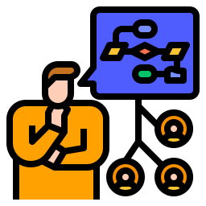

Daqui 20 anos, como estarão as linguagens voltadas para a Web?
Uma das principais tendências que podemos esperar ver nas próximas décadas é uma maior ênfase na programação orientada a objetos (POO) e em linguagens de programação baseadas em objetos.
Outra tendência que podemos esperar ver é a crescente adoção de linguagens de programação que são projetadas especificamente para trabalhar com Big Data e outras tecnologias de processamento de dados em larga escala.
Outra tendência importante é o aumento do uso de inteligência artificial e aprendizado de máquina. As linguagens de programação voltadas para a Web precisarão continuar a evoluir para oferecer suporte a essas tecnologias.
Em resumo, as linguagens voltadas para a web nos próximos 20 anos provavelmente estarão focadas em desempenho, segurança, inteligência artificial e escalabilidade.